Vision Based Navigation
Computer Vision Group - TUM
Practical Course: Vision Based Navigation
Lecture 4: Structure from Motion (SfM)
Mateo de Mayo, Jason Chui, Jonathan Eichhorn
Prof. Dr. Daniel Cremers

Version: 01.04.2026
Topics Covered
Introduction
Structure from Motion (SfM)
Simultaneous Localization and Mapping (SLAM)
Bundle Adjustment
Energy Function
Non-linear Least Squares
Exploiting the Sparse Structure
Triangulation
Structure from Motion
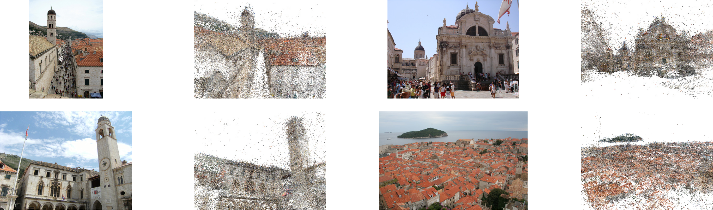
3D reconstruction using a set of unordered images
Requires estimation of 6DoF poses
Simultaneous Localization and Mapping (SLAM)
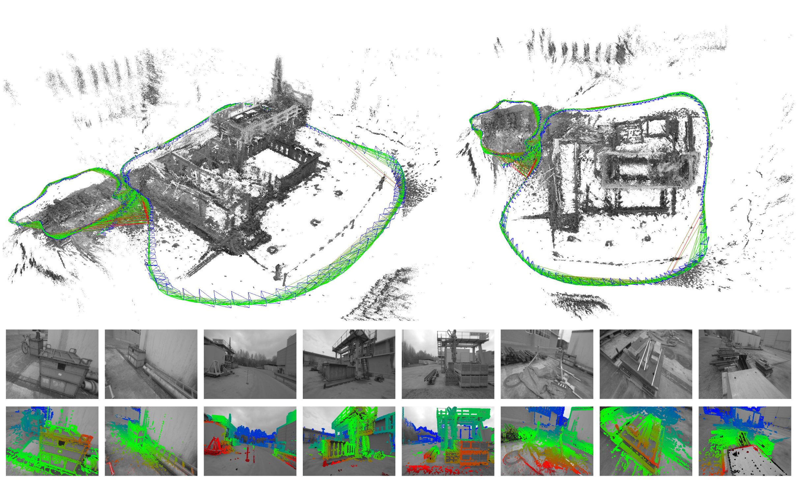
Estimate 6DoF poses and map from sequential image data
Update once new frames arrive
Problem Definition SfM / Visual SLAM
Estimate camera poses and map from a set of images
Input
- Set of images \(I_{0:t} = {I_0, \ldots, I_t}\)
- Additional input possible
- Stereo
- Depth
- Inertial measurements
- Control input
Output
Camera pose estimates \(\mathbf{T}_i \in SE(3)\),
also written as \(\mathbf{\xi}_i = (log \mathbf{T}_i)^\vee \in \mathbb{R}^6\) \(\quad i \in {0, \ldots, t}\)
Environment map \(M\)
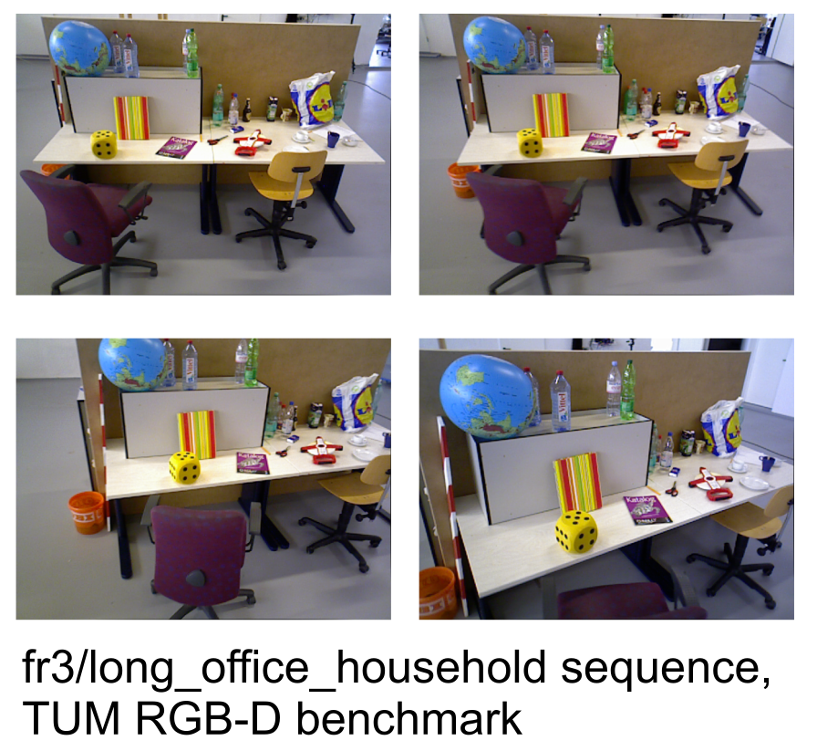
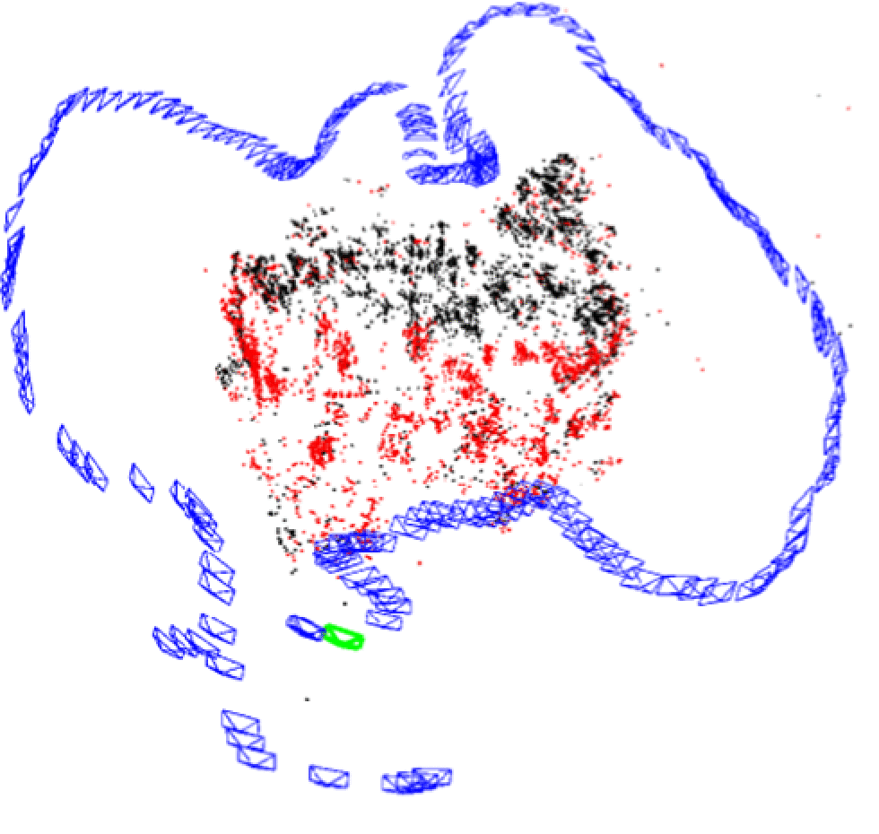
Typical SfM Pipeline
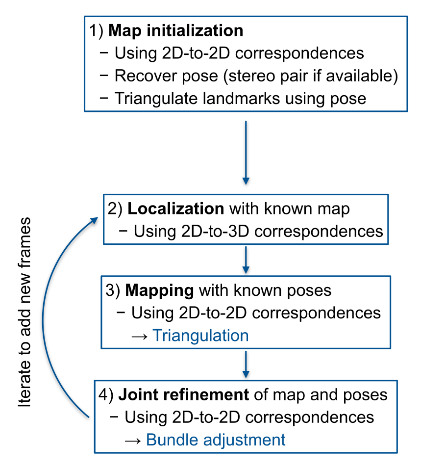
Visual SLAM
SLAM \(\subset\) SfM, with special focus:
- Sequential image data
- Data arrives sequentially
- Preferably realtime
- More focus on trajectory
Technical solutions:
- Windowed optimization
- Selection of keyframes
- Removal of keyframes (e.g. marginalization)
Accumulation of drift:
- Detect loop closures
- Global mapping in separate thread (e.g. pose graph optimization)
Odometry:
- No global mapping
- Incremental tracking only
- Local map possible
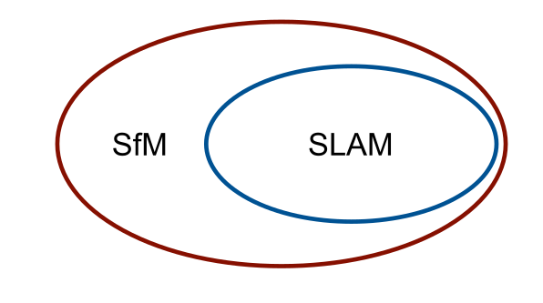
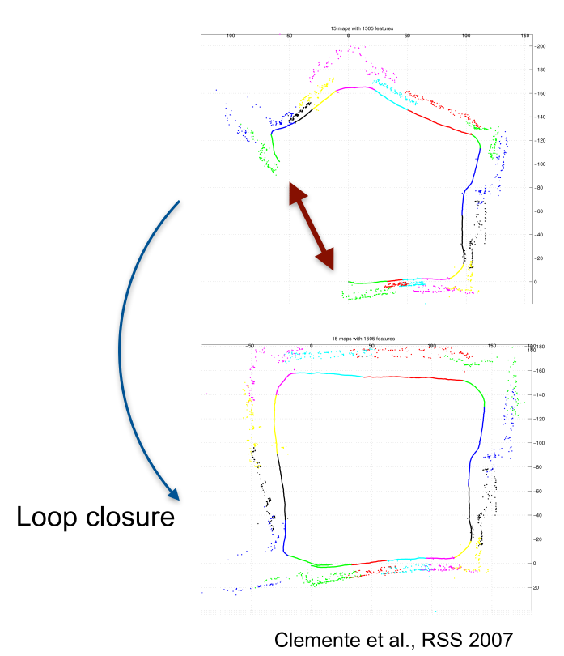
Landmarks and Features
The map consists of 3D locations of landmarks \[M = \{\mathbf{m}_1, \ldots, \mathbf{m}_S\} \subseteq \mathbb{R}^3\]
For image \(\tau\), the set of 2D image coordinates of detected features is denoted \[Y_\tau = \{\mathbf{y}_{\tau, 1}, \ldots, \mathbf{y}_{\tau, N_\tau}\} \subseteq \mathbb{R}^2\]
Known data association:
Feature \(i\) in image \(\tau\) corresponds to landmark \(j = c_{\tau, j}\)
\(1 \leq i \leq N_\tau, 1 \leq j \leq S\)
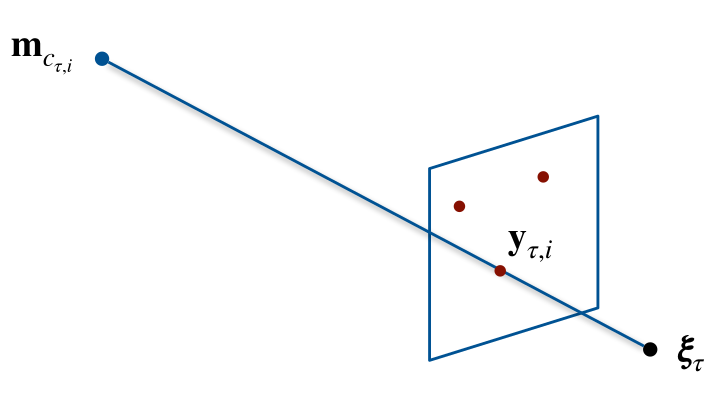
Bundle Adjustment Energy
\[ \begin{aligned} E(\mathbf{\xi}_{0:t}, M) &= \frac{1}{2} \| \mathbf{\xi}_0 - \mathbf{\xi}^0 \|^2_{\Sigma_{0,\mathbf{\xi}}^{-1}} && \text{Absolute pose prior} \\ &+ \frac{1}{2} \sum_{\tau=0}^t \sum_{i=1}^{N_\tau} \| \mathbf{y}_{\tau, i} - h(\mathbf{\xi}_\tau, \mathbf{m}_{c_{\tau, i}}) \|^2_{\Sigma_{\mathbf{y_{\tau,i}}}^{-1}} && \text{Reprojection error}\\ \end{aligned} \]
Notation: \(\| \mathbf{r} \|^2_{A} = \mathbf{r}^T A \mathbf{r} = \langle \mathbf{r}, A \mathbf{r} \rangle\)
- Pose prior: Fix absolute pose ambiguity
- In this case equivalent to keeping \(\mathbf{\xi}_0 = \mathbf{\xi}^0\)
- Keep absolute pose information e.g. when first frame is marginalized
- Additional prior to fix scale ambiguity might be necessary
- Induced factor graph:
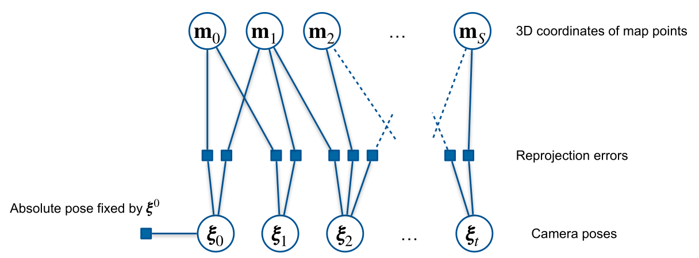
Energy Function as Non-linear Least Squares
Residuals as function of state vector \(\mathbf{x} := (\mathbf{\xi}_0, \ldots ,\mathbf{\xi}_t, \mathbf{m}_1, \ldots ,\mathbf{m}_S)^T\)
- \(\mathbf{r}^0(\mathbf{x}) := \mathbf{\xi}_0 \ominus \mathbf{\xi}^0\)
- \(\mathbf{r}^y_{\tau,i}(\mathbf{x}) := \mathbf{y}_{\tau, i} - h(\mathbf{\xi}_\tau, \mathbf{m}_{c_{\tau, i}})\)
Stack the residuals in a vector-valued function und collect the residual covariances on the diagonal blocks of a square matrix \[ \mathbf{r}(\mathbf{x}) := \begin{pmatrix} \mathbf{r}^0(\mathbf{x}) \\ \mathbf{r}^y_{0,i}(\mathbf{x}) \\ \vdots \\ \mathbf{r}^y_{t,N_t}(\mathbf{x}) \\ \end{pmatrix} \in \mathbb{R}^{6 + 2 \sum_{\tau=0}^t N_\tau} \qquad \mathbf{W} := \begin{pmatrix} \Sigma_{0,\mathbf{\xi}}^{-1} & & & 0\\ & \Sigma_{\mathbf{y}_{0,1}}^{-1} & \\ & & \ddots \\ 0 & & & \Sigma_{\mathbf{y}_{t,N_t}}^{-1} \\ \end{pmatrix} \in \mathbb{R}^{(6 + 2 \sum_{\tau=0}^t N_\tau) \times (6 + 2 \sum_{\tau=0}^t N_\tau)} \]
Rewrite energy function as \[\boxed{E(\mathbf{x}) = \frac{1}{2} \| \mathbf{r}(\mathbf{x}) \|^2_{\mathbf{W}}}\]
Recap: Gauss-Newton Method
- Idea: Approximate Newton’s method to minimize \(E(\mathbf{x})\)
- Approximate \(E(\mathbf{x})\) through linearization of residuals \[ \begin{aligned} \tilde{E}(\mathbf{x}) &= \frac{1}{2} \| \mathbf{\tilde{r}}(\mathbf{x}) \|^2 && \text{k iteration index}\\ &= \frac{1}{2} \| \mathbf{r}(\mathbf{x}_k) + \mathbf{J}_k (\mathbf{x} - \mathbf{x}_k) \|^2 && \mathbf{J}_k := \nabla_\mathbf{x} \mathbf{r}(\mathbf{x}) |_{\mathbf{x} = \mathbf{x}_k} \\ &= \frac{1}{2} (\mathbf{r}(\mathbf{x}_k) + \mathbf{J}_k (\mathbf{x} - \mathbf{x}_k))^T \mathbf{W} (\mathbf{r}(\mathbf{x}_k) + \mathbf{J}_k (\mathbf{x} - \mathbf{x}_k)) && \text{unroll}\\ &= \underbrace{\frac{1}{2} \mathbf{r}(\mathbf{x}_k)^T \mathbf{W} \mathbf{r}(\mathbf{x}_k)}_{\text{constant}} + \underbrace{\mathbf{r}(\mathbf{x}_k)^T \mathbf{W} \mathbf{J}_k}_{=: \mathbf{b}_k^T} (\mathbf{x} - \mathbf{x}_k) + \frac{1}{2} (\mathbf{x} - \mathbf{x}_k)^T \underbrace{\mathbf{J}_k^T \mathbf{W} \mathbf{J}_k}_{=: \mathbf{H}_k} (\mathbf{x} - \mathbf{x}_k) && \text{rearrange} \end{aligned} \]
Finding root of gradient as in Newton’s method leads to update rule - \(\nabla_\mathbf{x} \tilde{E}(\mathbf{x}) = \mathbf{b}_k^T + (\mathbf{x} - \mathbf{x}_k)^T \mathbf{H}_k\) - \(\nabla_\mathbf{x} \tilde{E}(\mathbf{x}_{k+1}) = 0 \Leftrightarrow \mathbf{x} = \mathbf{x}_k - \mathbf{H}_k^{-1} \mathbf{b}_k\) - \(\Rightarrow \boxed{\mathbf{x}_{k+1} = \mathbf{x}_k - \mathbf{H}_k^{-1} \mathbf{b}_k}\)
- Pros:
- Faster convergence than gradient descent (approx. quadratic convergence rate)
- Cons:
- Divergence if too far from local optimum (\(\mathbf{H}_k\) not positive definite)
- Solution quality depends on initial guess iteration index
Structure of the Bundle Adjustment Problem 1/3
\(\mathbf{b}_k\) and \(\mathbf{H}_k\) are formed by summing terms from individual residuals: \[ \begin{aligned} \mathbf{b}_k = \mathbf{b}_k^0 + \sum_{\tau=0}^{t} \sum_{i=1}^{N_\tau} \mathbf{b}_k^{\tau,i} = \left( \mathbf{J}_k^0 \right)^\top \Sigma_{0,\xi}^{-1} \mathbf{r}^0(\mathbf{x}_k) + \sum_{\tau=0}^{t} \sum_{i=1}^{N_\tau} \left( \mathbf{J}_k^{\tau,i} \right)^\top \Sigma_{y_{\tau,i},\,\tau,i}^{-1} \mathbf{r}^y(\mathbf{x}_k)\\ \mathbf{H}_k = \mathbf{H}_k^0 + \sum_{\tau=0}^{t} \sum_{i=1}^{N_\tau} \mathbf{H}_k^{\tau,i} = \left( \mathbf{J}_k^0 \right)^\top \Sigma_{0,\xi}^{-1} \left( \mathbf{J}_k^0 \right) + \sum_{\tau=0}^{t} \sum_{i=1}^{N_\tau} \left( \mathbf{J}_k^{\tau,i} \right)^\top \Sigma_{y_{\tau,i}}^{-1} \left( \mathbf{J}_k^{\tau,i} \right) \end{aligned} \]
\(\mathbf{J}_k^0\): Jaocobian of pose prior residual
\(\mathbf{J}_k^{\tau,i}\): Jacobian of reprojection error for feature \(i\) in image \(\tau\)
What is the structure of these terms?
Structure of the Bundle Adjustment Problem - \(\mathbf{b}_k\) 2/3
\[ \mathbf{b}_k = \mathbf{b}_k^0 + \sum_{\tau=0}^{t} \sum_{i=1}^{N_\tau} \mathbf{b}_k^{\tau,i} = \left( \mathbf{J}_k^0 \right)^\top \Sigma_{0,\xi}^{-1} \mathbf{r}^0(\mathbf{x}_k) + \sum_{\tau=0}^{t} \sum_{i=1}^{N_\tau} \left( \mathbf{J}_k^{\tau,i} \right)^\top \Sigma_{y_{\tau,i},\,\tau,i}^{-1} \mathbf{r}^y(\mathbf{x}_k) \]
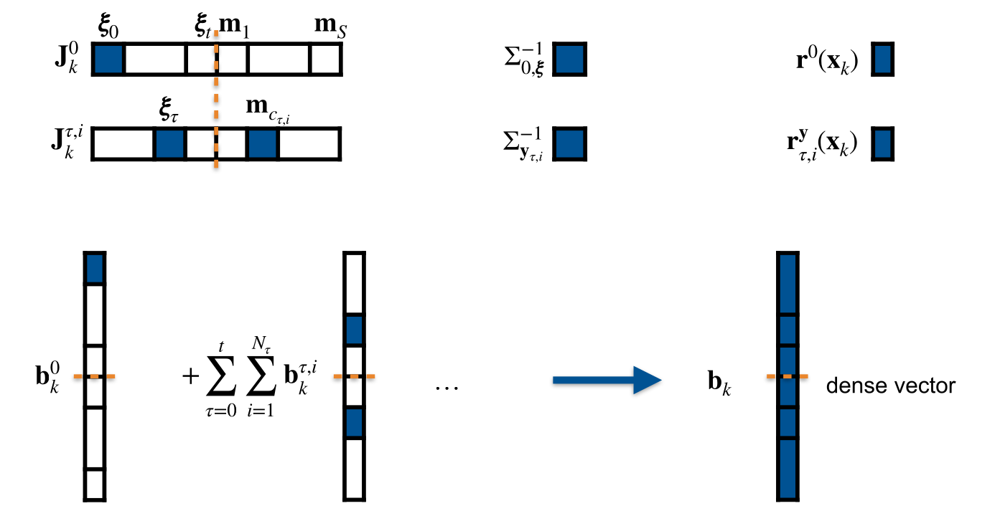
Structure of the Bundle Adjustment Problem - \(\mathbf{H}_k\) 3/3
\[ \mathbf{H}_k = \mathbf{H}_k^0 + \sum_{\tau=0}^{t} \sum_{i=1}^{N_\tau} \mathbf{H}_k^{\tau,i} = \left( \mathbf{J}_k^0 \right)^\top \Sigma_{0,\xi}^{-1} \left( \mathbf{J}_k^0 \right) + \sum_{\tau=0}^{t} \sum_{i=1}^{N_\tau} \left( \mathbf{J}_k^{\tau,i} \right)^\top \Sigma_{y_{\tau,i}}^{-1} \left( \mathbf{J}_k^{\tau,i} \right) \]
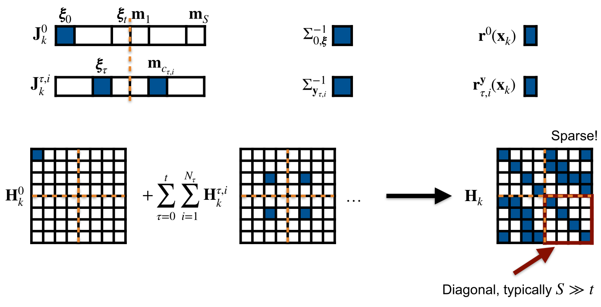
Example Hessian of a BA Problem
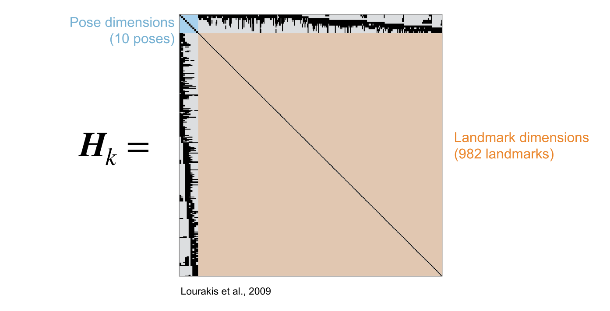
- Large, but sparse!
- How to invert efficiently?
Exploiting the Sparse Structure - Schur Complement
Idea: Apply the Schur complement to solve the system in a partitioned way \[ \begin{aligned} &\mathbf{H}_k \Delta \mathbf{x} = -\mathbf{b}_k\\ &\Rightarrow \begin{pmatrix} \mathbf{H}_{\xi\xi} & \mathbf{H}_{\xi m} \\ \mathbf{H}_{m \xi} & \mathbf{H}_{mm} \end{pmatrix} \begin{pmatrix} \Delta \mathbf{x_\xi} \\ \Delta \mathbf{x_m} \end{pmatrix} = -\begin{pmatrix} \mathbf{b}_\xi \\ \mathbf{b}_m \end{pmatrix}\\ &\Leftrightarrow \begin{cases} \mathbf{H}_{\xi\xi} \Delta \mathbf{x_\xi} + \mathbf{H}_{\xi m} \Delta \mathbf{x_m} = -\mathbf{b}_\xi \\ \mathbf{H}_{m \xi} \Delta \mathbf{x_\xi} + \mathbf{H}_{mm} \Delta \mathbf{x_m} = -\mathbf{b}_m \end{cases}\\ &\Leftrightarrow \begin{cases} \Delta \mathbf{x_\xi} = -\mathbf{H}_{\xi\xi}^{-1} \mathbf{b}_\xi - \mathbf{H}_{\xi\xi}^{-1} \mathbf{H}_{\xi m} \Delta \mathbf{x_m} \\ \Delta \mathbf{x_m} = -\mathbf{H}_{mm}^{-1} \mathbf{b}_m - \mathbf{H}_{mm}^{-1} \mathbf{H}_{m \xi} \Delta \mathbf{x_\xi} \end{cases}\\ &\Leftrightarrow \begin{cases} \Delta \mathbf{x_\xi} = - (\mathbf{H}_{\xi\xi} - \mathbf{H}_{\xi m} \mathbf{H}_{mm}^{-1} \mathbf{H}_{m \xi})^{-1} (\mathbf{b}_\xi - \mathbf{H}_{\xi m} \mathbf{H}_{mm}^{-1} \mathbf{b}_m) &\leftarrow \text{"Reduced camera system" (RCS)}\\ \Delta \mathbf{x_m} = -\mathbf{H}_{mm}^{-1} (\mathbf{b}_m + \mathbf{H}_{m \xi} \Delta \mathbf{x_\xi}) &\leftarrow \text{Given by backsubstitution of $\Delta \mathbf{x_\xi}$} \end{cases} \end{aligned} \]
- Is this any better?
Exploiting the Sparse Structure - Reduced camera system
What is the structure of the two sub-problems?
Reduced camera system (RCS): Only involves pose variables \[\Delta \mathbf{x_\xi} = - (\underbrace{\mathbf{H}_{\xi\xi} - \mathbf{H}_{\xi m} \mathbf{H}_{mm}^{-1} \mathbf{H}_{m \xi}}_{\text{Reduced pose Hessian $\mathbf{\tilde{H}}$}})^{-1} (\underbrace{\mathbf{b}_\xi - \mathbf{H}_{\xi m} \mathbf{H}_{mm}^{-1} \mathbf{b}_m}_{\text{Reduced pose gradient $\mathbf{\tilde{b}}$}}) \Leftrightarrow \underbrace{\mathbf{\tilde{H}} \Delta \mathbf{x_\xi} = -\mathbf{\tilde{b}}}_{\text{Reduced camera system}}\]
Reduced pose hessian rewrite (low memory and parallelizable) \[\mathbf{\tilde{H}} = \mathbf{H}_{\xi\xi} - \mathbf{H}_{\xi m} \mathbf{H}_{mm}^{-1} \mathbf{H}_{m \xi} = \mathbf{H}_{\xi\xi} - \sum_{j=1}^S \mathbf{H}_{\xi m_j} \mathbf{H}_{m_j m_j}^{-1} \mathbf{H}_{m_j \xi} \in \mathbb{R}^{6(t+1) \times 6(t+1)}\]
Reduced pose gradient rewrite: \[\mathbf{\tilde{b}} = \mathbf{b}_\xi - \mathbf{H}_{\xi m} \mathbf{H}_{mm}^{-1} \mathbf{b}_m = \mathbf{b}_\xi - \sum_{j=1}^S \mathbf{H}_{\xi m_j} \mathbf{H}_{m_j m_j}^{-1} \mathbf{b}_{m_j} \in \mathbb{R}^{6(t+1)}\]
No need to save landmark variables in memory anymore!
Exploiting the Sparse Structure - Poses Sparsity
What is the structure of the two sub-problems?
Poses: \(\Delta \mathbf{x_\xi} = - \mathbf{\tilde{H}}^{-1} (\mathbf{\tilde{b}})\)
- \(\mathbf{\tilde{H}} = \mathbf{H}_{\xi\xi}
- \sum_{j=1}^S \mathbf{H}_{\xi m_j} \mathbf{H}_{m_j m_j}^{-1}
\mathbf{H}_{m_j \xi}\)
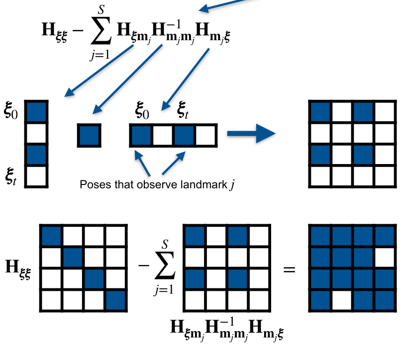
- \(\mathbf{\tilde{b}} = \mathbf{b}_\xi -
\sum_{j=1}^S \mathbf{H}_{\xi m_j} \mathbf{H}_{m_j m_j}^{-1}
\mathbf{b}_{m_j}\)
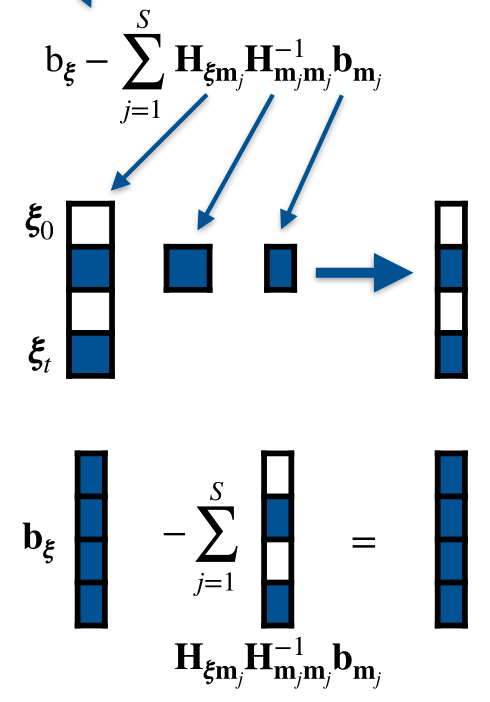
Exploiting the Sparse Structure - Landmarks Sparsity
- What is the structure of the two sub-problems?
- Landmarks part of the schur complement: \[
\begin{aligned}
\Delta \mathbf{x_m} &= -\mathbf{H}_{mm}^{-1} (\mathbf{b}_m +
\mathbf{H}_{m \xi} \Delta \mathbf{x_\xi}) && \quad \in
\mathbb{R}^{3S} \\
\Rightarrow \Delta \mathbf{x}_{m_j} &= -\mathbf{H}_{m_j m_j}^{-1}
(\mathbf{b}_{m_j} + \mathbf{H}_{m_j \xi} \Delta \mathbf{x_\xi})
&& \quad \in \mathbb{R}^3
\end{aligned}
\]
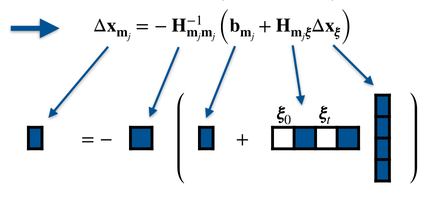
\(\mathbf{H}_{mm}\) is block diagonal, with one block per landmark
Each block \(\mathbf{H}_{m_j m_j}\) is small (3x3 for point landmarks)
Each block can be inverted independently
Landmark-wise solution \(\Delta \mathbf{x}_{m_j}\) can be computed in parallel
Comparably small matrix operations (low memory footprint)
Only involves poses that observe the landmark
Exploiting the sparse structure - Putting it all together
\[ \begin{aligned} \Delta \mathbf{x_\xi} &= -\mathbf{\tilde{H}}^{-1} \mathbf{\tilde{b}}\\ &= - (\mathbf{H}_{\xi\xi} - \mathbf{H}_{\xi m} \mathbf{H}_{mm}^{-1} \mathbf{H}_{m \xi})^{-1} (\mathbf{b}_\xi - \mathbf{H}_{\xi m} \mathbf{H}_{mm}^{-1} \mathbf{b}_m)\\ &= - \left( \mathbf{H}_{\xi\xi} - \sum_{j=1}^S \mathbf{H}_{\xi m_j} \mathbf{H}_{m_j m_j}^{-1} \mathbf{H}_{m_j \xi} \right)^{-1} \left( \mathbf{b}_\xi - \sum_{j=1}^S \mathbf{H}_{\xi m_j} \mathbf{H}_{m_j m_j}^{-1} \mathbf{b}_{m_j} \right) \end{aligned} \]
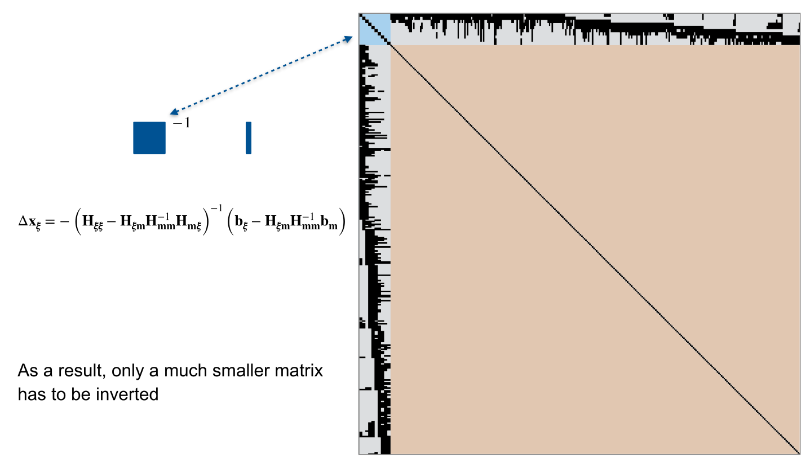
Exploiting the Sparse Structure - Further Considerations
Reduced pose Hessian can still have a sparse structure
For many camera poses with many shared observations, the inversion of the reduced pose Hessian is still computationally expensive!
Exploit further structure, e.g. using variable reordering or hierarchical decomposition
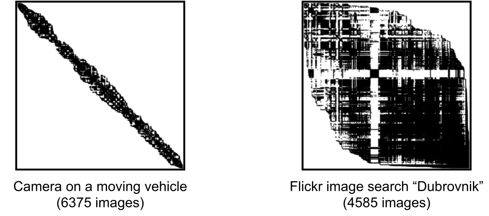
Effect of Loop Closures on the Hessian - Before
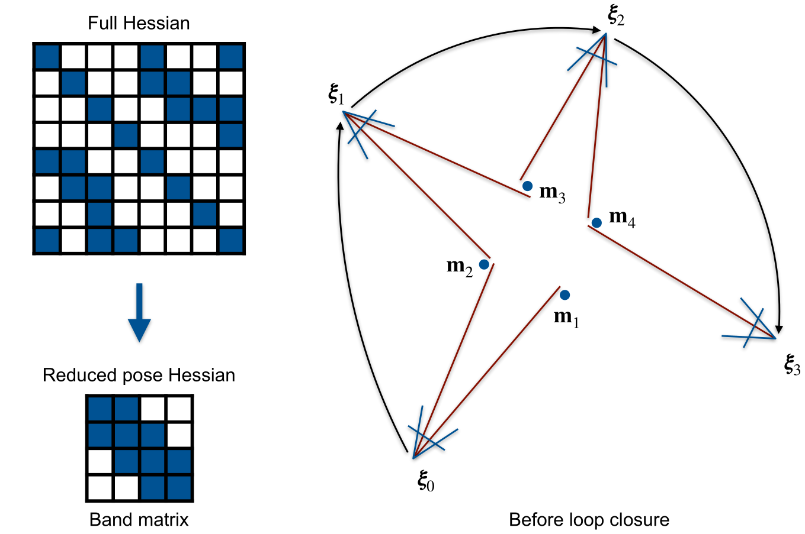
Effect of Loop Closures on the Hessian - After
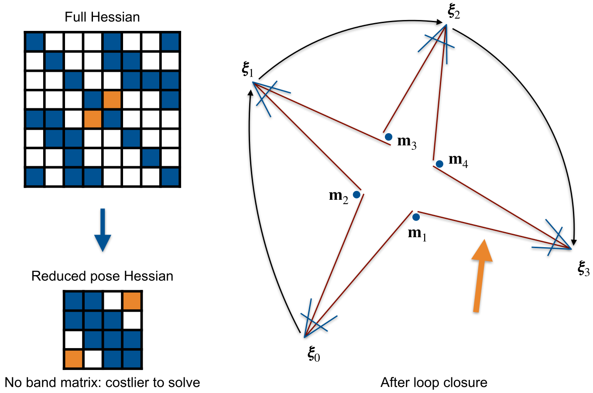
Further Considerations
Many methods to improve convergence / robustness / run-time efficiency, e.g.
- Use matrix decompositions (e.g. Cholesky) to perform inversions
- Levenberg-Marquardt optimization improves basin of convergence
- Heavier-tail distributions / robust norms (e.g., Huber) on the residuals can be implemented using iteratively reweighted least squares
- Preconditioning
- Hierarchical optimization
- Variable reordering
- Delayed relinearization
Triangulation 1/2
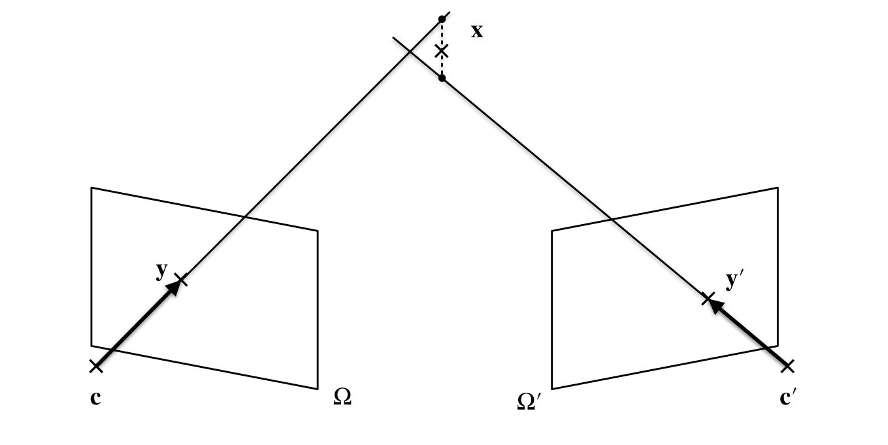
- Find landmark position given the camera poses
- Ideally, the rays should intersect
- In practice, many sources of error: pose estimates, feature detections and camera model / intrinsic parameters
Triangulation 2/2
Goal: Reconstruct 3D point \(\tilde{x} = (x, y, z, w)^T \in \mathbb{P}^3\) from 2D image observations \(\{\mathbf{y_1}, \ldots, \mathbf{y_n}\}\) for known camera poses \(\{\mathbf{T}_1, \ldots, \mathbf{T}_n\}\)
Linear solution: Find 3D point such that reprojections equal its projection
- For each image \(i\), let \(\mathbf{T}_i = \begin{pmatrix} & \mathbf{p_1} \\ & \mathbf{p_2} \\ & \mathbf{p_3} \\ 0 & 0 & 0 & 1 \end{pmatrix}\), where \(\mathbf{p_j} \in \mathbb{R}^{1 \times 4}\) and \(\mathbf{y_i} = \begin{pmatrix} u_i \\ v_i \end{pmatrix}\)
- Projecting \(\mathbf{\tilde{x}}\) yields \(\mathbf{y_i}' = \pi(\mathbf{T}_i \tilde{\mathbf{x}}) = \begin{pmatrix} \mathbf{p_1} \tilde{\mathbf{x}}/\mathbf{p_3} \tilde{\mathbf{x}} \\ \mathbf{p_2} \tilde{\mathbf{x}}/\mathbf{p_3} \tilde{\mathbf{x}} \end{pmatrix}\)
- Requiring \(\mathbf{y_i}' = \mathbf{y_i}\) gives two linear equations per image: \[ \begin{cases} \mathbf{p_1} \tilde{\mathbf{x}}/\mathbf{p_3} \tilde{\mathbf{x}} = u_i \\ \mathbf{p_2} \tilde{\mathbf{x}}/\mathbf{p_3} \tilde{\mathbf{x}} = v_i \end{cases} \Leftrightarrow \begin{cases} u_i \mathbf{p_3} \tilde{\mathbf{x}} - \mathbf{p_1} \tilde{\mathbf{x}} = 0 \\ v_i \mathbf{p_3} \tilde{\mathbf{x}} - \mathbf{p_2} \tilde{\mathbf{x}} = 0 \end{cases} \Leftrightarrow \begin{pmatrix} \mathbf{p_1} - u_i \mathbf{p_3} \\ \mathbf{p_2} - v_i \mathbf{p_3} \end{pmatrix} \tilde{\mathbf{x}} = 0 \quad \dot{\Leftrightarrow} \quad \mathbf{A} \tilde{\mathbf{x}} = 0 \in \mathbb{R}^{2} \]
- Leads to system of linear equations \(\mathbf{A} \tilde{\mathbf{x}} = 0\) , two
approaches to solve:
- Set \(w = 1\) and solve non-homogeneous least squares problem
- Find nullspace of \(\mathbf{A}\) using SVD, then scale such that \(w=1\)
Non-linear least squares on reprojection errors (more accurate): \[ \tilde{\mathbf{x}} = \min_{\mathbf{x}} \sum_{i=1}^n \| \mathbf{y_i} - \pi(\mathbf{T}_i \tilde{\mathbf{x}}) \|^2_2 \]
Different solutions for different methods in the presence of noise
Exercises
Exercise sheet 4
- Implement components of SfM pipeline
- Triangulation: use OpenGV’s triangulate function
- BA: Ceres can do the Schur complement
ceres::Solver::Options ceres_options;
ceres_options.max_num_iterations = 20;
ceres_options.linear_solver_type = ceres::SPARSE_SCHUR;
ceres_options.num_threads = 8;
ceres::Solver::Summary summary;
Solve(ceres_options, &problem, &summary);
std::cout << summary.FullReport() << std::endl;
// Output in next slideExercise sheet 5
- Implement components of odometry
- Similar to sheet 4, but:
- More efficient 2D-3D matching using approximate pose of previous frame
- New keyframe if number of matches too small
- New landmarks by triangulation from stereo pair
- Keep runtime bounded by removing old keyframes
Ceres report
Original Reduced
Parameter blocks 4896 4892
Parameters 15354 15324
Effective parameters 15190 15162
Residual blocks 24014 24014
Residuals 48028 48028
Minimizer TRUST_REGION
Sparse linear algebra library SUITE_SPARSE
Trust region strategy LEVENBERG_MARQUARDT
Given Used
Linear solver SPARSE_SCHUR SPARSE_SCHUR
Threads 8 8
Linear solver ordering AUTOMATIC 4730,162
Schur structure 2,3,6 2,3,6
Cost:
Initial 3.979886e+03
Final 3.766801e+03
Change 2.130843e+02
Minimizer iterations 21
Successful steps 21
Unsuccessful steps 0
Time (in seconds):
Preprocessor 0.048047
Residual only evaluation 0.069569 (20)
Jacobian & residual evaluation 0.388923 (21)
Linear solver 0.586967 (20)
Minimizer 1.134797
Postprocessor 0.001068
Total 1.183913
Termination: NO_CONVERGENCE (Maximum number of iterations reached. Number of iterations: 20.)Summary
SfM
- Estimate map and camera poses from set of images
- SLAM: Sequential data, real-time
- Odometry: No global mapping
Bundle Adjustment
- Non-linear least squares problem
- Sparse structure of Hessian can be exploited for efficient inversion
Triangulation
- Linear and non-linear algorithms
- Differences in the presence of noise